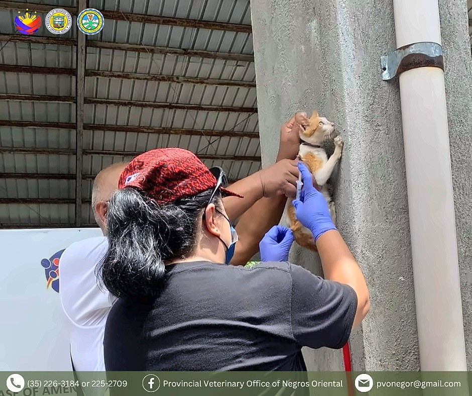

Active cases in the province
African Swine Fever
- Animals affected
- Domestic pigs and wild boar
- Latest status
- 36 barangays in 8 cities and municipalities, as of 4 September 2026 (bulletin #2026-16)
Upcoming observance · Global event
Rabies is almost 100% fatal once symptoms appear and kills nearly 59,000 people every year.
Every 28 September, the world comes together to raise awareness about ending rabies. This year’s theme, “Stronger Together,” is a reminder that rabies can only be eliminated when everyone works together.

World Rabies Day has been marked every 28 September since 2007 by the Global Alliance for Rabies Control (GARC), a long-time partner of the World Organisation for Animal Health (WOAH). It is the biggest event in rabies awareness.
The day and the activities held around it help prevention and elimination efforts around the world. It is a chance to raise awareness and speak up for ending one of the deadliest diseases that pass from animals to people.
From local communities and veterinary workers to governments, health workers, teachers and global partners, everyone has a part to play in making a rabies-free world a reality.
This year’s theme calls on everyone to help stop the spread of rabies from dogs. Whichever way you choose to take part, it makes a difference:
Communication materials you can use and share:
Listed disease
As individuals and as a community, we have the power to end rabies. Follow and join the conversation with #WorldRabiesDay:
Adapted from “World Rabies Day 2026: Stronger Together”, World Organisation for Animal Health (WOAH).
The three diseases this office monitors most closely, the animals they affect and where things stand in Negros Oriental.
Active cases in the province
No reported cases in the province
Preventable with yearly vaccination
Observance of World Rabies Day 2026 at the Foundation University campus in Dumaguete City. Provincial Veterinary Office teams vaccinated dogs and cats against rabies and gave deworming medicine to pets brought by students, staff and residents. Photos courtesy of Foundation University (FU). Select a photo to view it larger.
Photos courtesy of Foundation University (FU).
Scenes from the province’s March 2026 anti-rabies vaccination drives, including the Nationwide Simultaneous Anti-Rabies Vaccination Drive on 11 March. Select a photo to view it larger.
The Barangay Livestock Aides (Blaides) Technical Workshop 2025, “Seguridad sa Pagkaon Panghingusgan Para sa Malambuong Produksyon,” held on 2 December 2025 at the Plenary Hall of the Negros Oriental Convention Center, Dumaguete City. Select a photo to view it larger.
Livestock Assessment sessions held across the three congressional districts of Negros Oriental, bringing together PVO staff, local agriculture offices and livestock stakeholders. Select a photo to view it larger.
One office, every kind of animal the province depends on — large livestock, backyard poultry, and the pets that share our homes.